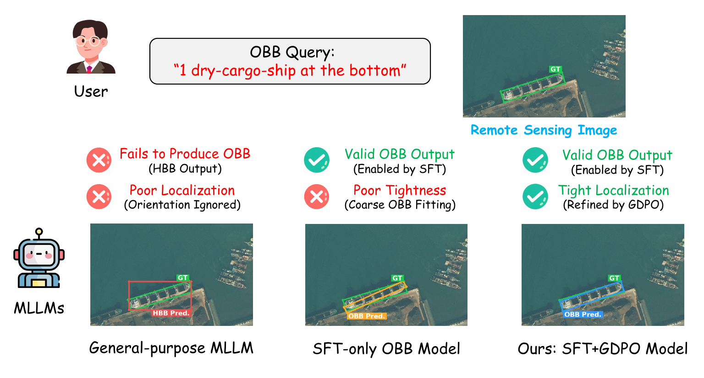
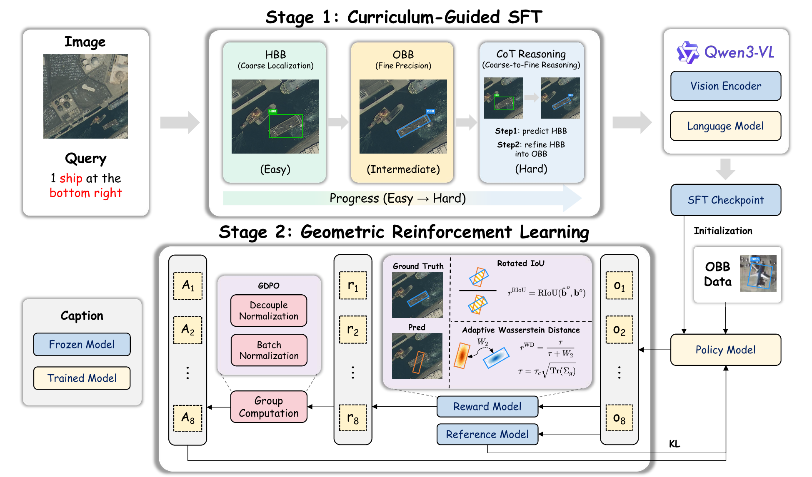
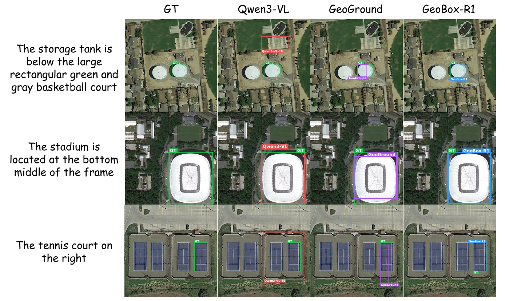
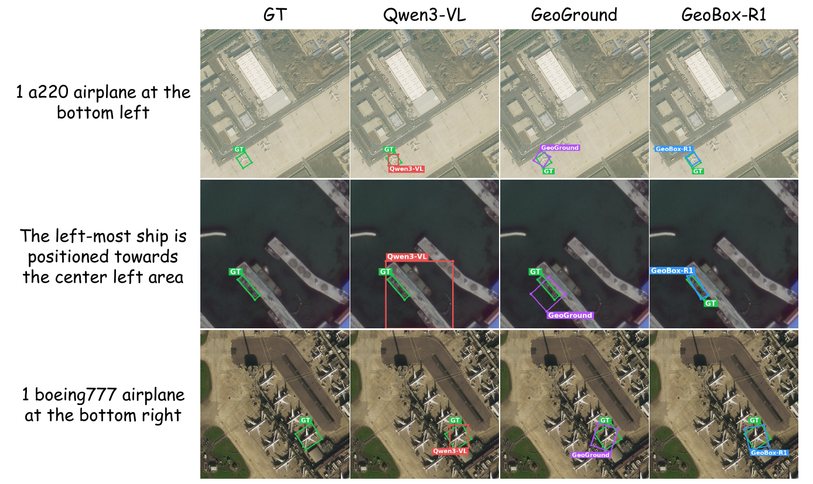
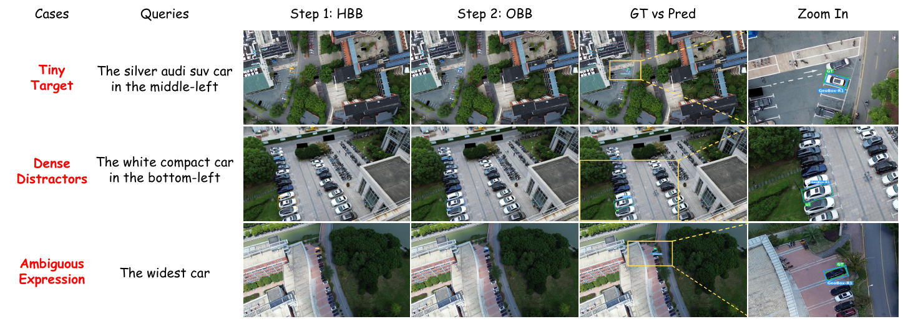

Remote sensing visual grounding (RSVG) aims to localize the object referred to by a natural-language expression in aerial or satellite imagery. Recent multimodal large language models (MLLMs) make unified box-level grounding feasible, but general-purpose models do not reliably produce oriented bounding boxes (OBBs) and often fall back to horizontal bounding box (HBB) outputs. Jointly training a single model for HBB and OBB prediction is also challenging, because the two tasks require different levels of semantic grounding and geometric precision.
We propose GeoBox-R1, a two-stage training paradigm for unified box-level RSVG. It first performs curriculum-guided supervised fine-tuning, ordering training data from HBB grounding to OBB grounding and finally to HBB-to-OBB Chain-of-Thought supervision. It then applies geometric reinforcement learning via Group Reward-Decoupled Normalization Policy Optimization (GDPO), using two rule-based geometric rewards — Rotated IoU and adaptive Wasserstein distance — to refine OBB prediction.
Across 7 HBB and 3 OBB benchmarks, GeoBox-R1 achieves the best macro averages on all three metrics for both tasks. With only 4B parameters, it surpasses state-of-the-art 7B–8B models, leading by 3.68/4.89/2.61 points on HBB and 5.36/7.74/2.89 points on OBB, with the largest gains at the stricter Acc@0.7 threshold.

Given the query “1 dry-cargo-ship at the bottom” the ground truth is an oriented box around the ship. A general-purpose MLLM fails to produce an OBB at all and returns a horizontal box that ignores orientation. SFT makes valid OBB outputs possible, but the SFT-only model still fits the target loosely. Geometric RL then tightens it: ours (SFT + GDPO) aligns closely with the ground truth.

Stage 1 establishes unified box-level grounding through a curriculum. Stage 2 refines oriented localization with GDPO.
Training data is presented easy-to-hard rather than shuffled:
Concatenation, not shuffling — the curriculum lives in the data order, under one ordinary token-level objective.
161,692 samples: 32,638 HBB, 96,791 OBB, 32,263 CoT.
Two rule-based geometric rewards, no learned reward model:
Scaling $\tau$ with target size keeps reward sensitivity comparable across scales; a fixed $\tau$ systematically under-rewards large objects.
Equal weights ($\lambda_k=0.5$ each), on a 20% OBB subset (19,357 of 96,791).
Each reward channel is normalized within its own group of $G$ completions before the two are combined, so the channel with the larger numeric range cannot dominate. A second normalization over the mini-batch $\mathcal{B}$ then stabilizes the advantage scale under both geometric objectives.
Switch metric with the buttons. Red is best, blue underline is second best, across the whole table.
| Model | Params | DIOR-RSVG-Test | DIOR-RSVG-Val | RSVG-Test | RSVG-Val | GeoChat* | VRSBench* | AVVG | Avg. |
|---|---|---|---|---|---|---|---|---|---|
| General-Purpose MLLMs | |||||||||
| InternVL3 | 2B | 15.01 | 13.60 | 0.24 | 0.33 | 11.09 | 5.51 | 2.15 | 6.85 |
| LLaVA-OV-1.5 | 4B | 18.39 | 16.68 | 1.79 | 1.25 | 11.92 | 7.98 | 1.69 | 8.53 |
| LLaVA-OV-1.5 | 8B | 23.59 | 22.63 | 1.14 | 1.50 | 18.42 | 13.39 | 1.65 | 11.76 |
| InternVL3 | 8B | 29.94 | 27.44 | 1.14 | 1.58 | 24.79 | 19.45 | 6.12 | 15.78 |
| Qwen2.5-VL | 3B | 37.52 | 37.90 | 13.69 | 14.32 | 36.07 | 36.74 | 18.83 | 27.87 |
| Qwen2.5-VL | 7B | 40.31 | 38.59 | 14.83 | 16.74 | 41.84 | 41.51 | 21.91 | 30.82 |
| Qwen3-VL | 4B | 51.91 | 51.38 | 33.17 | 32.89 | 49.17 | 51.42 | 23.93 | 42.01 |
| Qwen3-VL | 8B | 54.14 | 53.68 | 33.82 | 34.80 | 50.73 | 53.55 | 25.22 | 43.70 |
| Remote Sensing MLLMs | |||||||||
| LHRS-Bot | 7B | 13.15 | 12.56 | 0.65 | 0.33 | 2.16 | 1.21 | 0.15 | 4.32 |
| LHRS-Bot-Nova | 8B | 31.31 | 29.75 | 2.12 | 1.75 | 26.13 | 12.54 | 1.04 | 14.95 |
| GeoChat | 7B | 31.04 | 29.16 | 2.44 | 4.16 | 36.69 | 14.38 | 0.31 | 16.88 |
| Supervised Fine-Tuning on refGeo | |||||||||
| GeoChat (SFT) | 7B | 45.42 | 43.37 | 2.20 | 3.41 | 35.81 | 27.56 | 0.78 | 22.65 |
| InternVL3 (SFT) | 2B | 57.15 | 56.12 | 8.56 | 10.32 | 40.15 | 36.29 | 9.58 | 31.17 |
| LLaVA-OV-1.5 (SFT) | 4B | 61.49 | 59.73 | 20.70 | 22.81 | 45.49 | 37.60 | 10.00 | 36.83 |
| Qwen2.5-VL (SFT) | 3B | 68.09 | 66.72 | 39.85 | 34.55 | 52.44 | 57.26 | 27.11 | 49.43 |
| GeoGround | 7B | 77.70 | 77.13 | 26.65 | 27.81 | 69.76 | 65.76 | 21.60 | 52.35 |
| InternVL3 (SFT) | 8B | 74.83 | 75.06 | 46.05 | 44.05 | 59.23 | 58.05 | 28.41 | 55.10 |
| GeoBox-R1 (SFT) | 4B | 74.91 | 74.21 | 48.57 | 46.29 | 61.39 | 64.45 | 30.33 | 57.17 |
| GeoBox-R1 (SFT + GDPO) | 4B | 76.61 | 75.11 | 51.26 | 48.38 | 61.13 | 66.84 | 32.14 | 58.78 |
| Model | Params | DIOR-RSVG-Test | DIOR-RSVG-Val | RSVG-Test | RSVG-Val | GeoChat* | VRSBench* | AVVG | Avg. |
|---|---|---|---|---|---|---|---|---|---|
| General-Purpose MLLMs | |||||||||
| InternVL3 | 2B | 6.95 | 6.61 | 0.00 | 0.08 | 5.09 | 1.67 | 0.42 | 2.98 |
| LLaVA-OV-1.5 | 4B | 4.10 | 3.72 | 0.24 | 0.08 | 2.03 | 1.18 | 0.07 | 1.63 |
| LLaVA-OV-1.5 | 8B | 6.36 | 6.14 | 0.16 | 0.25 | 3.33 | 2.55 | 0.10 | 2.70 |
| InternVL3 | 8B | 16.50 | 14.82 | 0.41 | 0.33 | 10.11 | 6.89 | 2.87 | 7.42 |
| Qwen2.5-VL | 3B | 25.98 | 26.72 | 8.15 | 8.91 | 19.68 | 19.10 | 12.56 | 17.30 |
| Qwen2.5-VL | 7B | 26.77 | 25.13 | 7.91 | 10.16 | 21.65 | 21.18 | 15.07 | 18.27 |
| Qwen3-VL | 4B | 38.16 | 37.05 | 20.05 | 19.57 | 28.29 | 28.80 | 18.99 | 27.27 |
| Qwen3-VL | 8B | 41.50 | 40.50 | 20.13 | 19.98 | 29.23 | 29.80 | 18.55 | 28.53 |
| Remote Sensing MLLMs | |||||||||
| LHRS-Bot | 7B | 3.02 | 3.24 | 0.08 | 0.08 | 0.30 | 0.22 | 0.02 | 0.99 |
| LHRS-Bot-Nova | 8B | 12.36 | 11.66 | 0.24 | 0.17 | 8.68 | 2.67 | 0.00 | 5.11 |
| GeoChat | 7B | 8.72 | 8.18 | 0.24 | 0.42 | 13.57 | 3.16 | 0.00 | 4.90 |
| Supervised Fine-Tuning on refGeo | |||||||||
| GeoChat (SFT) | 7B | 21.40 | 20.42 | 0.41 | 0.75 | 14.44 | 8.45 | 0.10 | 9.42 |
| InternVL3 (SFT) | 2B | 38.17 | 36.73 | 2.12 | 1.92 | 17.07 | 14.94 | 3.71 | 16.38 |
| LLaVA-OV-1.5 (SFT) | 4B | 40.97 | 39.63 | 5.05 | 6.24 | 16.50 | 14.51 | 2.41 | 17.90 |
| Qwen2.5-VL (SFT) | 3B | 53.42 | 53.23 | 20.54 | 17.32 | 29.47 | 34.31 | 19.73 | 32.57 |
| GeoGround | 7B | 64.98 | 63.00 | 10.02 | 9.08 | 50.66 | 39.05 | 8.37 | 35.02 |
| InternVL3 (SFT) | 8B | 62.76 | 61.57 | 25.51 | 25.81 | 32.03 | 33.70 | 19.91 | 37.33 |
| GeoBox-R1 (SFT) | 4B | 62.46 | 62.23 | 29.42 | 28.73 | 35.13 | 39.58 | 24.74 | 40.33 |
| GeoBox-R1 (SFT + GDPO) | 4B | 64.78 | 63.13 | 32.60 | 31.97 | 35.49 | 41.16 | 26.39 | 42.22 |
| Model | Params | DIOR-RSVG-Test | DIOR-RSVG-Val | RSVG-Test | RSVG-Val | GeoChat* | VRSBench* | AVVG | Avg. |
|---|---|---|---|---|---|---|---|---|---|
| General-Purpose MLLMs | |||||||||
| InternVL3 | 2B | 20.74 | 19.52 | 1.73 | 2.16 | 14.93 | 11.08 | 3.58 | 10.53 |
| LLaVA-OV-1.5 | 4B | 24.63 | 23.88 | 4.88 | 5.26 | 20.34 | 16.70 | 5.30 | 14.43 |
| LLaVA-OV-1.5 | 8B | 27.58 | 26.91 | 4.08 | 3.86 | 24.19 | 21.44 | 4.02 | 16.01 |
| InternVL3 | 8B | 30.56 | 29.47 | 3.99 | 5.14 | 26.38 | 23.67 | 6.94 | 18.02 |
| Qwen2.5-VL | 3B | 37.47 | 37.29 | 14.62 | 15.48 | 34.83 | 35.25 | 15.36 | 27.18 |
| Qwen2.5-VL | 7B | 39.29 | 38.09 | 15.50 | 16.97 | 38.51 | 38.76 | 17.78 | 29.27 |
| Qwen3-VL | 4B | 48.21 | 47.58 | 30.72 | 30.45 | 43.37 | 45.21 | 19.79 | 37.90 |
| Qwen3-VL | 8B | 50.81 | 49.63 | 31.81 | 30.78 | 44.37 | 46.72 | 20.21 | 39.19 |
| Remote Sensing MLLMs | |||||||||
| LHRS-Bot | 7B | 18.37 | 18.22 | 1.68 | 1.04 | 7.24 | 6.14 | 1.31 | 7.71 |
| LHRS-Bot-Nova | 8B | 30.99 | 29.89 | 4.80 | 4.12 | 26.92 | 19.55 | 3.51 | 17.11 |
| GeoChat | 7B | 32.52 | 31.54 | 7.99 | 9.74 | 36.17 | 23.66 | 1.86 | 20.50 |
| Supervised Fine-Tuning on refGeo | |||||||||
| GeoChat (SFT) | 7B | 41.20 | 39.93 | 4.93 | 6.10 | 35.35 | 31.69 | 3.07 | 23.18 |
| InternVL3 (SFT) | 2B | 50.18 | 49.41 | 12.67 | 14.91 | 37.34 | 36.52 | 10.70 | 30.25 |
| LLaVA-OV-1.5 (SFT) | 4B | 53.04 | 51.90 | 24.28 | 24.37 | 40.63 | 38.13 | 11.64 | 34.86 |
| Qwen2.5-VL (SFT) | 3B | 59.85 | 59.09 | 34.68 | 30.74 | 45.66 | 49.19 | 22.36 | 43.08 |
| GeoGround | 7B | 68.28 | 67.54 | 28.15 | 27.08 | 57.97 | 56.27 | 22.28 | 46.80 |
| InternVL3 (SFT) | 8B | 65.99 | 65.71 | 40.08 | 39.19 | 48.16 | 50.57 | 24.74 | 47.78 |
| GeoBox-R1 (SFT) | 4B | 65.99 | 65.55 | 40.51 | 39.75 | 50.34 | 54.28 | 25.32 | 48.82 |
| GeoBox-R1 (SFT + GDPO) | 4B | 67.50 | 66.57 | 42.99 | 42.00 | 51.25 | 55.74 | 26.68 | 50.39 |
* denotes a modified test split. GeoGround leads on DIOR-RSVG and GeoChat*, GeoBox-R1 leads on RSVG and AVVG — the macro-average gain reflects complementary per-dataset behavior rather than uniform dominance.
| Model | Params | GeoChat* | VRSBench* | AVVG | Avg. |
|---|---|---|---|---|---|
| GeoChat | 7B | 31.73 | 11.76 | 0.10 | 14.53 |
| GeoChat (SFT) | 7B | 28.95 | 21.78 | 0.26 | 17.00 |
| InternVL3 (SFT) | 2B | 24.57 | 19.82 | 0.98 | 15.12 |
| LLaVA-OV-1.5 (SFT) | 4B | 33.23 | 23.87 | 2.69 | 19.93 |
| Qwen2.5-VL (SFT) | 3B | 49.36 | 41.67 | 16.13 | 35.72 |
| InternVL3 (SFT) | 8B | 49.79 | 42.01 | 15.43 | 35.74 |
| GeoGround | 7B | 58.72 | 53.26 | 13.89 | 41.96 |
| GeoBox-R1 (SFT) | 4B | 55.96 | 51.14 | 22.23 | 43.11 |
| GeoBox-R1 (SFT + GDPO) | 4B | 60.56 | 56.61 | 24.79 | 47.32 |
| Model | Params | GeoChat* | VRSBench* | AVVG | Avg. |
|---|---|---|---|---|---|
| GeoChat | 7B | 8.27 | 2.04 | 0.00 | 3.43 |
| GeoChat (SFT) | 7B | 11.07 | 5.80 | 0.03 | 5.64 |
| InternVL3 (SFT) | 2B | 5.26 | 7.48 | 0.15 | 4.30 |
| LLaVA-OV-1.5 (SFT) | 4B | 9.76 | 8.71 | 0.59 | 6.35 |
| Qwen2.5-VL (SFT) | 3B | 22.65 | 21.55 | 8.63 | 17.61 |
| InternVL3 (SFT) | 8B | 23.10 | 20.65 | 7.40 | 17.05 |
| GeoGround | 7B | 25.49 | 29.82 | 4.10 | 19.81 |
| GeoBox-R1 (SFT) | 4B | 30.45 | 27.69 | 15.07 | 24.40 |
| GeoBox-R1 (SFT + GDPO) | 4B | 35.19 | 30.55 | 16.89 | 27.55 |
| Model | Params | GeoChat* | VRSBench* | AVVG | Avg. |
|---|---|---|---|---|---|
| GeoChat | 7B | 31.25 | 21.26 | 1.08 | 17.87 |
| GeoChat (SFT) | 7B | 30.14 | 27.70 | 1.97 | 19.94 |
| InternVL3 (SFT) | 2B | 27.28 | 24.84 | 4.35 | 18.82 |
| LLaVA-OV-1.5 (SFT) | 4B | 33.18 | 28.54 | 6.14 | 22.62 |
| Qwen2.5-VL (SFT) | 3B | 40.46 | 39.98 | 15.12 | 31.86 |
| InternVL3 (SFT) | 8B | 41.66 | 40.68 | 15.39 | 32.58 |
| GeoGround | 7B | 46.89 | 48.35 | 15.64 | 36.96 |
| GeoBox-R1 (SFT) | 4B | 45.45 | 45.91 | 19.20 | 36.85 |
| GeoBox-R1 (SFT + GDPO) | 4B | 48.92 | 49.43 | 21.18 | 39.85 |
GDPO lifts the SFT checkpoint from 43.11 to 47.32 average Acc@0.5, leading GeoGround by 5.36 / 7.74 / 2.89 points across the three metrics.

HBB grounding. Qwen3-VL selects a coarse salient region and GeoGround drifts toward nearby structures, while GeoBox-R1 resolves the storage tank's relation to the reference court, captures the stadium extent tightly, and follows the rightward cue for the tennis court. Green: ground truth; red: Qwen3-VL; purple: GeoGround; blue: GeoBox-R1.

OBB grounding. Prompted for oriented boxes, Qwen3-VL falls back to horizontal boxes and GeoGround shows corner or angle offsets, while GeoBox-R1 aligns tightly with elongated ships and airplanes where orientation and aspect ratio are critical.

HBB-to-OBB Chain-of-Thought. Three challenging car-grounding queries: a tiny target, dense distractors, and an ambiguous expression. Yellow marks the coarse HBB cue and zoom region; blue is the refined OBB; green is ground truth.
Training data is built on refGeo, aggregating five remote sensing grounding sources.
| Source | HBB | OBB | CoT | Total |
|---|---|---|---|---|
| DIOR-RSVG | 27,133 | 0 | 0 | 27,133 |
| RSVG | 5,505 | 0 | 0 | 5,505 |
| GeoChat | 0 | 47,912 | 15,971 | 63,883 |
| VRSBench | 0 | 29,017 | 9,672 | 38,689 |
| AVVG | 0 | 19,862 | 6,620 | 26,482 |
| Total | 32,638 | 96,791 | 32,263 | 161,692 |
| Source | Full OBB pool | 20% subset |
|---|---|---|
| GeoChat | 47,912 | 9,582 |
| VRSBench | 29,017 | 5,803 |
| AVVG | 19,862 | 3,972 |
| Total | 96,791 | 19,357 |
The 20% subset used for GDPO.
GeoBox-R1 is instantiated on Qwen3-VL-4B-Instruct; both stages use ms-swift.
@inproceedings{geoboxr1,
title = {GeoBox-R1: Curriculum-Guided SFT and Geometric RL for
Unified Box-Level Remote Sensing Visual Grounding},
author = {Lan, Chenxi and Wu, Yuchen and Zhou, Minghang and
Li, Tianyu and Qiu, Zhihao and Wang, Guoqing},
booktitle = {Proceedings of the AAAI Conference on Artificial Intelligence},
year = {2027},
note = {Under review}
}